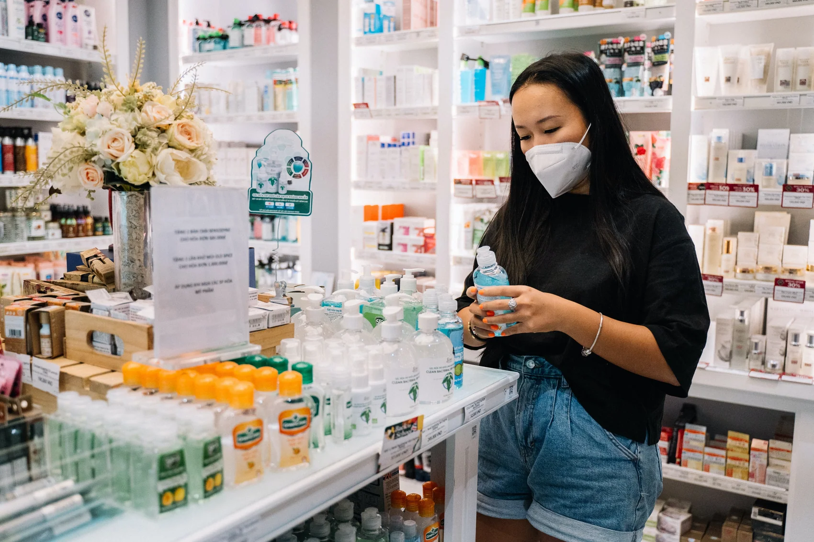

Leading generative and evaluative research for a retail pharmacy shopping, coupons and delivery app.

Research practice overview for a pharmacy app; unfinished draft notes were omitted. The cover is a contextual stock photograph, not a product UI screenshot.
For a while, I worked as the UX Researcher, along with a UX Designer and a Design Lead to work exclusively with one of the biggest pharmacy chains in Brazil, focusing only on their coupon + delivery app.
The product is like any delivery app where you choose items, buy them to be delivered or pickup, and you can receive great discount coupons and deals. The app became more and more robust and complete with our work, which is very gratifying. It was an incredible experience, and I learned very much with my teammates.
My (main) responsibilities 👩💻
- The leadership of the Research process;
- Conduction of generative and evaluative research, with both qualitative and quantitative methods;
- Market research and analysis;
- Creation and facilitation of workshops for discovery, ideation, data analysis, product analytics, persona, user journey, and more;
- Collaboration with stakeholders including product managers, developers, and designers, for best results and deliverables;
- Review and analysis of web analytics to identify behavioral patterns;
- Creation of wireframes, user flow, sitemap, and more.
Discovering & delivering 🎁
During my time with this client, we made a lot of amazing deliveries that I'm proud of (and what an amazing team), but I decided to highlight just a few.